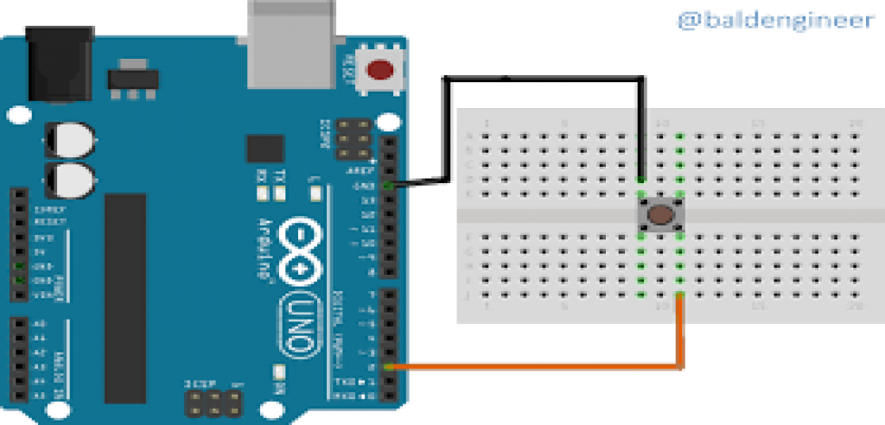

An electrical switch, in the most basic sense, is a device that turns an electric current either on or off. If that was all you needed to know about switches, it would be a very short story. However, electrical switches come in thousands of styles, sizes, and ratings, while encompassing an even larger number of features, specifications, and footprints.
Specifications
Mode of Operation: Tactile feedbackPower Rating: MAX 50mA 24V DC
Insulation Resistance: 100Mohm at 100v
Operating Force: 2.55±0.69 N
Contact Resistance: MAX 100mOhm
Operating Temperature Range: -20 to +70 ℃
Storage Temperature Range: -20 to +70 ℃

| On Sensor | On Raspberry | On Arduino |
|---|---|---|
| Vcc | GPIO 18 (or any other GPIO pin) | D13 |
| Any Ground Pin | Ground (pin 6) | Ground (GND) |
It can be worked with
Working of DHT with Arduino Uno

#define LED 7 // The pin the LED is connected to
void setup() {
pinMode(LED, OUTPUT); // Declare the LED as an output
}
void loop() {
digitalWrite(LED, HIGH); // Turn the LED on
}
...
...